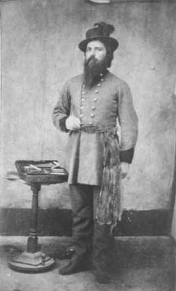
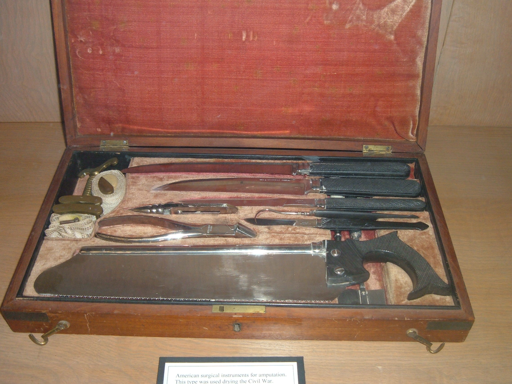
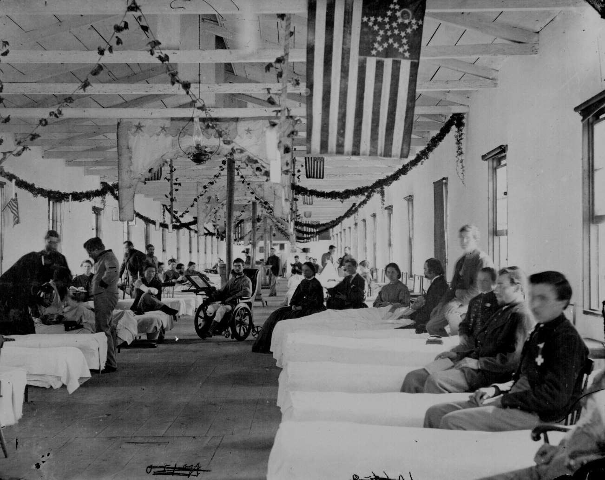
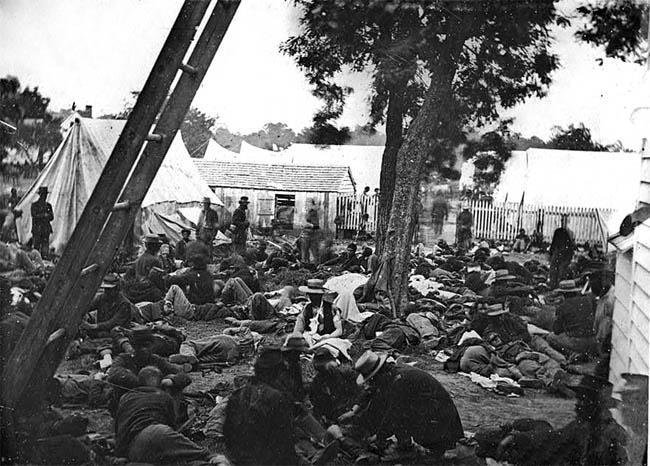
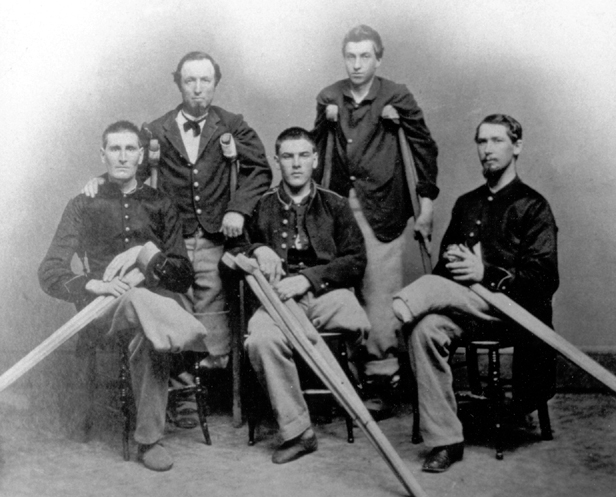
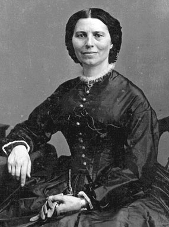
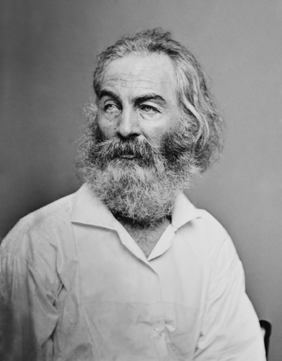
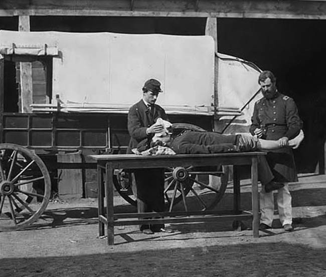

|
The soldier's courage and endurance were tested not only on
the field but also in the hospital--if he were unfortunate
enough to find himself in one. Mid-nineteenth-century
medical science was spectacularly ill-equipped to deal with
the ghastly nature and appalling number of wounds that Civil
War battles yielded. The impact of .58-caliber lead slugs on
human bones left the army surgeons with little recourse but
amputation, and those physicians plied their bone saws
diligently, raising heaps of severed limbs outside their
makeshift hospitals. Supplies of anesthetic often ran out,
and amputations were then performed without it. Many
soldiers died under the surgeons' well-intentioned but often
ineffective ministrations.
Aside from the possibility of facing amputation or other
treatment in a field hospital as a result of wounds, the
soldier might also find himself in a hospital due to
sickness. As with every previous war for which statistics
exist, the Civil War saw more soldiers die of disease than
as a result of enemy action. Dysentery, malaria, and various
"fevers" carried off thousands of men. When disease put a
soldier in an army hospital, it took him away from the
comforting fellowship of friends in his company, who had
probably been the boyhood friends of his hometown as well.
Whatever the circumstances that placed him there, a Civil
War soldier needed to summon all his reserves of fortitude.
Confederate Care of the Wounded
The machinery for disposing of battle casualties was
fairly simple. When a conflict was imminent, buildings or
tents near the scene of contemplated action were designated
as field hospitals and marked with flags. A small squad of
men, preferably convalescents and others not in best
fighting condition, was detailed from each company, to
remove the wounded to the field infirmaries. Each man so
detailed was equipped with a knapsack containing dressings,
stimulants and tourniquets; when fighting commenced,
|

Surgeons were in somewhat short supply
in the Confederacy; this physician served in
the Indian Territory with troops under the
command of Brig. Gen. Stand Watie.
|
assistant surgeons, accompanied by the details, moved
forward to dispose of the wounded. Assistant surgeons
supervised the administration of first aid and told litter
bearers which cases required removal to field hospitals.
Regimental surgeons remained at the field infirmaries of
their respective brigades to attend to the wounded as they
were brought in. They operated immediately on the most
urgent cases and directed removal in ambulances--which were
simply canvas-covered wagons--of those that were to be
transferred to interior hospitals. Patients thus removed
were sent first to receiving hospitals; from there they were
distributed as soon as possible to the general hospitals
located in most cities.
Early in the war the custom prevailed of permitting
convalescents to go home as soon as they were able to
travel, but consequent relapses from hemorrhages and from
improper care, plus increasing reluctance of those on
furlough to return to camp, caused an abatement of this
practice after 1863.
The system which Confederate authorities set up for the
care of the wounded was basically sound, but numerous
factors hindered its operation. In the first place
commanding generals sometimes failed to inform hard-pressed
medical officers of contemplated campaigns in sufficient
time to allow for adequate preparations. Lee's medical
director complained on one occasion to Surgeon General
[Samuel Preston] Moore: "The movements of the army cannot be
anticipated by me for the General commanding never discloses
any of his plans to those around him ... every thing is done
hurriedly and mysteriously." Even when ample notice was
given and advance preparation carefully made, medical
authorities, because of limitations of personnel and
essential facilities, were utterly unable to provide prompt
and adequate care for the thousands of men who were wounded
in every major encounter.
This was particularly true of the Confederacy's first
great fights. At Shiloh many wounded lay in the mud of the
battlefield all night under a cold pelting rain, without
attention of any sort, even though infirmary corps[men]
moved about as rapidly as possible and doctors labored to
the point of collapse. The falling back of the army
necessitated a hurried removal, and shivering, moaning men
were loaded into wagons, many of which were not equipped
with springs, and hauled more than twenty miles over "the
roughest and ruttiest roads in the Southern Confederacy" to
Corinth [Mississippi]. Here hotels, school buildings,
churches and private homes were converted into hospitals,
but all these did not provide enough shelter.
For days after the battle groaning men might be seen
lying about the depot waiting transportation to improvised
infirmaries at Memphis, Holly Springs and Oxford. Doctors
came from far and near and made their contributions to the
pile of amputated limbs that accumulated in the yard of
Corinth's Tishomingo Hotel.
Less than two months after Shiloh, the Seven Days'
campaign around Richmond produced a tide of casualties such
as the Confederacy had not seen before. Citizens of the
capital and of Petersburg took omnibuses and private
carriages to the battlefields and piled the injured into
stores, tobacco warehouses, factories, residences and tents.
But even these extraordinary measures fell short of the
need. A newspaper appeal, dated three days after fighting
ceased, stated that "hundreds and even thousands of ...
soldiers are lying wounded upon the battlefield waiting in
|

The surgical tools used on both
sides of the Civil War were crude by modern standards.
|
extreme agony for some pitying hands to remove them to a
place of refuge from the tortures which they endure." The
gruesome results of this neglect were vividly suggested by
an article on the treatment of flyblow. Other newspaper
notices urged citizens to bring ice and food to the
hospitals, to tear up old cotton clothes for bandages, and
to volunteer their services as nurses and cooks. Not until
more than two weeks after the last of the series of battles
was the situation brought under control. In the meantime
hundreds, if not thousands, of brave men whom timely
attention could have saved had endured unspeakable tortures
of hunger, thirst and pain, and had finally died.
Many soldiers looked with abhorrence on all hospitals,
and there can be no doubt that they were justified.
Operations were often rendered excruciatingly painful
because of the scarcity of opiates and the dullness of
scalpels. Some excellent sets of surgical implements were
imported and others were captured, but there was never
enough of these to go around; those manufactured in the
Confederacy were characterized by Lee's medical director as
"entirely useless."
Post-operational care was inadequate. In Richmond, where
conditions probably were better than average, the supervisor
of hospitals reported on one occasion that 131 medical
officers, many of whom were occupied with executive duties,
were charged with attending 10,200 patients--a proportion of
1 to 70. Inmates of hospitals complained repeatedly of an
insufficiency of nourishment, and reports of medical
officers leave little doubt that fare in some institutions
was notoriously poor. Clothing and bed covering were
frequently inadequate and sanitary conditions often left
much to be desired. At the Newsom Hospital in Chattanooga
soldiers were given clean garments for the duration of their
treatment, but on dismissal they were required to wear the
filthy attire which they wore when admitted.
"I beleave the Doctors kills more than they cour," wrote
an Alabama private in 1862; "Doctors haint Got half Sence."
And a Georgian expressed the opinion that army surgeons were
the "most unworthy of all the human famaly." These
particular Rebs may have had no other foundation for their
statements than the tendency of soldiers--well or sick--to
grouse. But with full allowance for prejudices and
overstatement, the conclusion remains inescapable that much
of the suffering endured by the wounded was due to poor
physicians. Examinations required of candidates for surgical
appointments were sometimes no more than farces. One doctor
said that his examining committee was composed of five
members of whom one owed his position to the favor of
kinsmen, another had failed to pass the course at the
University of Virginia, and a third was very drunk.
The practice of appointing surgeons with the
understanding that they were to stand examination at a later
time led to endless procrastination on the part of some who
were of doubtful abilities. The category of doctors known as
"contract physicians," who in times of emergency were called
on for a considerable portion of army practice, apparently
had to take no examination at all; these were, as a rule,
utterly undeserving of professional status. Many of the
regular appointees of 1861 were young and inexperienced, a
circumstance deriving largely from the fact that few of the
established practitioners sought army positions.
It would be erroneous to infer, however, that the
Confederate surgical corps was made up wholly of "culls,"
novices and quacks. The high-ranking officials were as a
rule men of unusual talent and attainment; many of the
regimental surgeons, and some of the assistant surgeons,
discharged their duties ably and conscientiously insofar as
the nature of available supplies would permit.
Confederate surgeons, good and bad, were handicapped
greatly by the undeveloped state of medical science which
characterized their period. They believed that suppuration,
or "laudable pus," was an essential feature with the healing
process. They probed with ungloved fingers; they deterred
recovery by tampering with wounds; they worked in soiled
uniforms; they used bloodstained bandages; and they were
only partially conscious of the importance of clean
instruments. It is not surprising in view of these and other
shortcomings that gangrene played havoc with their patients.
The majority of surgeons seem to have been men of
sympathy and of kindness. Sergeant William P. Chambers
recorded in his diary an instance typical of many. When a
doctor named Britts approached Chambers to operate he said:
"You were soldier enough to get shot I reckon you are
soldier enough to have the ball cut out." Chambers remarked
that he had no choice in the matter of receiving the wound,
and that he supposed the bullet must be extracted. Britts
fumbled about uncertainly and said, "Chambers, I don't like
to cut there," but presently he seemed to pull himself
together, and with the advice "turn your head away, I don't
want you to look at me," he began his unpleasant task. The
first stroke of the knife struck the missile. When this
proved to be only a part of the bullet Britts swore
profusely. Not until after a considerable amount of probing,
painful to the patient and grievous to the surgeon, was the
remnant brought to the surface.
Mortality from wounds, even from those in arms and legs,
was woefully high. Patients who recovered often experienced
painful setbacks and distressing complications. Indeed, no
phase of Confederate history is so dark and tragic as that
which reveals the incomprehensible torture endured by the
sick and the wounded. And if glory be measured by suffering,
the South's greatest heroes are not those who died at the
cannon's mouth on Cemetery Ridge, or in any of the other
gallant charges made by soldiers in gray, but rather those
who, sorely wounded or desperately ill, lived to experience
the unspeakable agony of hospitalization.
Union Care of the Wounded
When the guns fell silent and the haze of smoke drifted
away, the landscape of battle appeared littered with human
wreckage. Wounded soldiers quickly passed the first few
minutes of their newfound status as casualties. The numbness
around their wounds dissipated and was replaced by searing,
throbbing pain. Thirst set in quickly as the body strove to
replace fluids lost as a result of the trauma. Days might
pass before overworked stretcher-bearers made their way to
all corners of a far-flung battlefield. The waiting seemed
longer as injured men began to wonder whether anyone would
ever come to their aid. For the less seriously hurt, there
was time to gaze upon letters or photographs from home and
think about those who would be most affected by their death.
For the badly injured, there was only precious time counting
away as blood flowed and life slipped away.
After the Seven Days battles had ended, Captain Edward A.
Acton of the 8th New Jersey labored to describe the sounds
he bad heard during the night following the engagement at
White Oak Swamp. "Some of the hundreds of wounded strewn
across the field called repeatedly for drink. 'For Gods sake
bring me some water!' Others screamed for help. 'Doctor!
Doctor! Oh! My God where is the Doctor?' Others again were
groaning aloud in their anguish and calling piteously upon
the name of some friend who could not go to him! And I would
hear a boyish voice calling in a sobbing and pleading tone
for something or somebody, the sobs choking his utterance,
so that at the distance I lay I could not distinguish his
wants! Again I would hear weeping voices bewailing their
fate and begging for some relief from their sufferings and
alas! what was more terrible than all, many were blaspheming
and cursing most horribly." Clearly shaken by the
experience, Acton added an emotional postscript. "No voice
can convey the faintest idea, no pen can describe in any but
the most imperfect manner, no tongue, however eloquent,
could portray but in the feeblest style, nor could any
language, no matter how chaste and powerful, illustrate the
terrible fearfulness of those cries of anguish."
Rescue from the field of battle did not mean an end to
suffering, despair, and death. Nowhere was the horrible cost
of battle more apparent than in the primitive field
hospitals hastily established behind the lines. They usually
were located in farmhouses, barns, and other outbuildings,
where sanitary conditions were poor. In the aftermath of a
large engagement, the farmsteads of an entire locality were
commandeered for this pathetic work. The amateurish Union
|

A Union hospital
|
army was ill-prepared to handle large numbers of wounded
until late in the conflict. Surgeons were mostly civilian
doctors who joined volunteer units or who contracted
directly with the army to work at assigned posts, usually
large hospital complexes in Northern or occupied Southern
cities. The administration of field medical care was
woefully inadequate, as was the general state of medical,
especially surgical, knowledge in the 1860s. A regiment
could suffer hundreds of casualties in a single morning with
only a surgeon, an assistant surgeon, and a handful of
untrained medical orderlies available to deal with the
emergency. The system of field medical care was swamped
after every serious engagement, overwhelmed by the enormity
of battle.
Rufus Meade of the 5th Connecticut saw a field hospital
at its worst following the battle of Peach Tree Creek. He
beheld "the suffering and dying conditions of the poor
fellows that lay there wounded in every part of the body,
some crazy and raving and others suffering all that mortals
can. Doctors were busy cutting off limbs which were piled up
in heaps to be carried off and buried, while the stench even
then was horrible. Flies were flying around in swarms and
maggots were crawling in wounds before the doctors could get
time to dress them ... Suffice it to say that the 20th of
July 1864 was the saddest day I ever saw, I think I never
saw half the suffering before in one day."
The conditions in the field hospitals were unavoidably
primitive. Barns, tents, and living rooms were improvised
dressing stations, hardly fit for the surgical procedures
needed during the hours immediately following a battle. If a
wounded soldier survived the first few days, he could look
forward to transportation to base hospitals and general
hospitals in Northern-controlled cities. These facilities
often were constructed from the ground up and thus were
well-planned and adequately equipped with beds, wooden
floors, and medical supplies. They also were manned by
better nurses--women volunteers from the North, even members
of religious orders who were specially trained in medical
care. The squalor and confusion of the field hospital were
replaced by order and cleanliness.
Yet even in these comparative havens, a soldiers wound
could cause him much pain and anxiety. Colonel Adoniram
Judson Warner of the 39th Pennsylvania Infantry survived his
severe wound at Antietam only to endure many months of
painful recovery in Northern hospitals. In January 1863, he
received the first of two operations for his wound. The
ether dulled his senses and he felt no pain, but the
anesthetic produced a whirlwind of horrible imagery while
the surgeon cut into his mangled body. "I fancied that I was
wafting at an inconceivable velocity over space through
regions of every degree of darkness and of light now in one
and now in another and whirled round and round at a rate so
horrible that I shudder to think of it and still I thought
there was no end to this and that these wild pangs that I
felt would last forever." Warner experienced in his mind a
bewildering contrast between calm and terror. "At one moment
all would be light and glorious--the universe radiant all
over with rainbow light and then in a moment, as it seemed
to me, all was black and dark and the universe seemed filled
with all loathsome things--serpents, lizzards,
crockodiles--monstrous beasts of all shapes mixing their
slime in their gnashing for me and sounds that no letters
will spell greeted my cars."
Perhaps the worst aspect of this experience was that this
initial operation had to be followed by a second one. Warner
was so terrified by his drug-induced visions that he
initially refused to take ether for his second operation,
which was more risky than the first. The surgeon had to give
him chloroform, a much milder anesthetic, to ease him into
the harsher drug. Fortunately for Warner, it worked. He
later admitted that he could not have withstood the second
operation without ether, which he credited with saving his
life.
Soldiers who received major injuries had to struggle for
life no matter what hospital they were treated in. Warner
won his battle, and so did another seriously injured man,
Ebenezer Hannaford of the 6th Ohio Infantry. Hannaford was
hit near the throat during the battle of Stone's River. At
first he only wanted to crawl to a safe place on the
|

Field hospitals tended to be
very crowded, and were often overrun with disease.
|
battlefield to die, but the dull ache in his right shoulder
and his breath, which came "with a croup-like sound," did
not feel so bad after a time. He managed to make his way to
a field hospital, where he received emergency care.
But this was only the beginning of Hannaford's ordeal.
Carried to a base hospital at Nashville, where he would
spend the next three months, Hannaford discovered the true
nature of his sacrifice for the cause. "It was there that
Death drew near and bent over my pillow, so close that I
could feel his icy breath upon my check, while in mute,
ghastly silence we looked steadfastly each in the other's
face for weeks together." More than a month after the
battle, Hannaford nearly died when his wound suddenly began
to bleed. "I could feel myself sinking rapidly away; a
quiet, painless lethargy was stealing over my brain; fixed
upon the wall opposite, my eyes saw objects dim, trembling,
spectral; in my ears were strange, unearthly ringings, such
as I know not how to liken. Earth was receding--eternity at
hand." As the surgeon and a nurse entered his ward,
Hannaford invited death and closed his eyes with a tired but
calm feeling, The doctor managed to stop the flow of blood,
however, and Hannaford slowly regained consciousness. It was
a "strange, weird sensation, that vague, dreamy return to
consciousness." His first thought was to berate the surgeon
for saving him. "Those moments of syncope, when over my soul
had rolled the waters of oblivion, I seemed to feel had been
a very heaven of delight, and it was a pitiful service to
recall me thence to life and suffering again." Yet he was
destined to live and recount his story in vivid detail for a
popular news magazine later that year.
The doctors who tended soldiers like Warner and Hannaford
were warriors too. Their job was to try to save the
thousands of wounded men streaming rearward during and after
an engagement. They came face-to-face with the direct
results of combat and tried desperately to deal with
physical trauma much more diverse, more terrible, and more
voluminous than anything they had encountered in small-town
medical practice. "I have been hard at work today dressing
wounds," wrote surgeon Seneca B. Thrall, 13th Iowa, to his
wife. "The unutterable horror of war most manifest in a
hospital, two weeks after a battle, is terrible. It required
all my will to enable me to properly dress some of the foul,
suppurating, erysipelatous fractured limbs." Most surgeons
were incapable of working under these conditions without
being moved. Kentucky surgeon Claiborne J. Walton was
immersed in blood and suffering following the unsuccessful
Union assault at Kennesaw Mountain. The wounded of his
regiment were forced to lie in the hot sun between the lines
for most of the day, and some were nearly covered with
maggots by the time they were retrieved. Many who reached
the field hospital alive were hardly recognizable as the
healthy young men who had volunteered for military service
not so long before. "You may well suppose that their
suffering is immense," Walton told his wife. "Such as arms
shot off-legs shot off. Eyes shot outbrains shot out. Lungs
shot through and in a word everything shot to pieces and
totally ruined for all after life. The horrors of this war
|

Many men ended the Civil War
as amputees.
|
can never be half told. Citizens at home can never know one
fourth part of the misery brought about by this terrible
rebellion."
Soldiers visiting wounded comrades in field hospitals
were exposed to the same sights, sounds, and smells as the
surgeon, but they usually had more difficulty accepting
them. William Wheeler found a man whose wound had so
affected his nervous system that pain "came in great
wrenches and spasms that made him gnash his teeth and beat
on the bed in agony." Wheeler acknowledged that this
gruesome scene made him so ill that he had difficulty
walking to the door. Even a hardened campaigner could falter
in the face of what a regimental surgeon encountered in
numerous cases.
Perhaps the most terrible tragedy of the Civil War was
that it took place less than two decades before medicine was
revolutionized by a series of major biological and technical
advances. The use of antiseptics and sterilization, and the
implementation of higher professional standards for doctors
and nurses, would have saved thousands of lives.
Unfortunately, during the Civil War, wounded men far too
often had to rely on chance, their own determination, or the
uncertain skills of over-worked and undertrained medical
personnel to decide their fate. The most remarkable feature
of the medical history of the Union army was the large
number of soldiers who survived their wounds. The horrors of
the battlefield were great, and the horrors of the hospital
may have been even greater, but many soldiers somehow
endured and returned to the ranks or to civilian life.
Documenting the Ravages of Battle
At the start of the Civil War, there was a dearth of
reliable scientific information concerning the treatment of
battle wounds. It was not long, however, before medical
authorities for the Federal government realized that the
unparalleled bloodshed--for all its horror--presented them
with an extraordinary opportunity to fill that gap in the
body of medical knowledge.
In 1862, Surgeon General Joseph K. Barnes ordered the 735
surgeons serving the Federal armies to file regular reports
on every wounded patient in their care. Recognizing the
value of photography as a recording tool, he directed the
surgeons to have pictures taken of all "extraordinary
injuries." He also asked them to send in "pathological
surgical specimens" from their operations, including such
items as damaged viscera, diseased joints and excised
portions of bones.
Gruesome as the assignment may have been, surgeons in the
field complied enthusiastically, and civilian doctors who
took over the care of discharged veterans cooperated by
sending along follow-up reports. The soldiers, for their
part, willingly exposed their dreadful wounds to the camera
in the hope that the record of their misfortune might
someday prove valuable to medical science.
The surgeon general's study included evidence from the
highest ranks: the leg of Major General Daniel Sickles,
amputated at Gettysburg; a report on Brigadier General
Joshua Lawrence Chamberlain, shot through the pelvis; a
photograph of Major Henry Barnum posing with a linen cord
passing through his body from front to back along the route
of a wound suffered at Malvern Hill; even an account of
President Abraham Lincoln's fatal head wound. Most reports,
however, concerned injuries to common soldiers.
By the end of the War, some 318,000 federal soldiers had
fallen on the field of battle. But the valuable information
gained from many of their case histories, as well as those
of captured Confederates, contributed immeasurably to
advances in the treatment of battle wounds.
Dying a Courageous Death
Those who reached the military hospital found that though
it might offer respite to the body, it seldom permitted any
relaxation of the will. Thirty years later Oliver Wendell
Holmes, Jr., would tell a Harvard audience that "the book
for the army is a war-song, not a hospital-sketch," and in
obvious ways hospital and battlefield presented contrasting
experiences of war, but there was no dichotomy in
expectations of soldier comportment. The battlefield's
values extended to the hospital and in ways intensified
there. The body's debility and the removal of comrades'
support contributed to the necessity of what William Howell
Reed, a Sanitary Commission medical worker, called "die
harder heroism of the hospital." He and his fellow
|

Clara Barton and other Civil War
nurses served with distinction, but could often
do no more than make soldiers comfortable while
they died.
|
workers--Sanitary Commission and Christian Commission and
nurse volunteers--dedicated themselves to the alleviation of
the soldiers' suffering. No one could mistake the
selflessness of many of them, for to enter army hospitals
was always to risk one's own life against disease and
against injurious medical treatment. Louisa May Alcott had
worked only a month as a volunteer nurse at Georgetown's
Union Hotel Hospital when she contracted typhoid fever.The
preferred treatment--massive doses of calomel--resulted in a
mercury poisoning that caused the loss of teeth and hair and
the slow degeneration of the nervous system. She lived until
1888 but was never again entirely well. Her nursing
supervisor, the New England feminist reformer Hannah Ropes,
succumbed to typhoid pneumonia after eight months. Walt
Whitman visited Washington-area hospitals from late 1861
until June 1862, when his physical collapse brought doctors'
warnings that he must not return.
Dedicated as they might be, however, such people took up
roles not designed simply to make the wounded more
comfortable. The problem confronting them was their
inability to aid recovery in any medically significant way.
Few of the nurses had received training, and in any case the
state of medical science had little to offer. Still ignorant
of the relationship between germs and infection, doctors
amputated wounded limbs and then administered stimulants in
misguided efforts to forestall sepsis. Nurses could wash and
feed the wounded, could "clean" wounds, bind them with linen
and, as theory held beneficial, keep them moistened with
water. In the end, however, medical workers had little
choice but to rely on the teaching of Florence Nightingale:
Nature was the healer, and the task of the nurse, nature's
partner, was to encourage in the wounded soldier a
receptivity to nature's actions, a task more moral than
medical. Indeed, here some nurses felt themselves better
qualified than doctors, who were present "because their work
proceeded either from obedience to military duty or a
contract for pay." They were thus inferior as healers to the
nurse volunteers, who were there out of selfless concern for
their patients. "Apothecary and medicine chest might be
dispensed with," Hannah Ropes said, "if an equal amount of
genuine sympathy could be brought home to our stricken men."
In practice, however, nurses could do little (and doctors
little more). Though nineteenth-century Americans were well
acquainted with chronic illness and death, especially infant
mortality, in ways that must have generated some protective
emotional callus, virtual impotence amid so much pain surely
distressed medical aides. Their reaction was to encourage
the soldiers to live--and especially to die--in harmony with
soldierly values, to accept pain and death within the
framework of those values. The presence of women, the
hospital agent Julia Wheelock Freeman said, brought forth
"the better angel" of the soldiers nature. "A kind, cheerful
|

The poet Walt Whitman served as a nurse
during the Civil War, and penned some of the most vivid
accounts of hospital life during the conflict.
|
look, a smile of recognition, one word of encouragement,
enables him to bear his sufferings more bravely." So vital
did that seem to nurses that their desire to encourage &
courageous death frequently became the determination to
compel it.
The nurses' working proposition was the supremacy of the
individual will as an extension of courage: Suffering was a
refining and properly subduing influence to be borne
cheerfully and quietly. No matter how severe the wound, the
soldier possessed the spiritual power to triumph over pain
... Reed ... cited with approval an episode in which a young
conscript lay dying of lockjaw; while his body twitched with
pain, he had resigned himself to God's will and thus his
face bore an expression of serenity. Such cases were the
assurance that one could remain in control if one's values
were the proper ones.
Pain expressed, however, was weakness revealed. "Our
American man," Whitman wrote, "...holds himself cool and
unquestioned, master above all pains and bloody
mutilations." Thus wounds offered opportunities to
demonstrate a courage transcending even that of the
battlefield. Mary Livermore, a Sanitary Commission organizer
and frequent traveler to battle sites and hospitals, thought
that "it may be easy to face death on the battle-field, when
the pulses are maddened by the superhuman desire for victory
... But to lie suffering in a hospital bed for months ...
requires more courage." Hospital courage meant staying calm
and not complaining, even to the point of death. "He made no
display or talk; he met his fate like a man." The coward, on
the other hand, abject and groveling, gave voice to his
pain. Soldiers often contrasted their wounded comrades'
"stoical bravery" ("A Union soldier, if so severely wounded
that he could by no possibility assume a cheerful
countenance, would shut his teeth close together and say
nothing.") with the faint heartedness of the enemy ("a
rebel, if he could boast of only a flesh wound, would whine
and cry like a sick child").
In their efforts to bolster the impulse to courage,
hospital workers were certain that they were successful.
Whitman recorded the testimony of a doctor who in six months
among the wounded had seen none who had died "with a single
tremor of unmanly fear," and the poet's own experience bore
out the claim: Not one case of a soldier's dying "with
cowardly qualms of terror." He thought that record was "the
last-needed proof" of American democracy. Mary Livermore did
encounter a dying soldier who told her, "I have lived an
awful life, and I'm afraid to die. I shall go to hell."
"Stop screaming," she commanded. "Be quiet ... If you must
die, die like a man, and not like a coward." God, she
assured him, was willing to pardon him. Later a Methodist
minister arrived to urge trust in Christ and to sing hymns.
Finally, the soldier said, "It's all right with me,
chaplain! I will trust in Christ! God will forgive me! I can
die now!" Mary Livermore watched as his face grew rapturous.
"I looked at the dying man beside me, and saw, underneath
the deepening pallor of death, an almost radiant gleam." It
was, she reported, the only case of fear of death that she
encountered.
Often hospital workers thought of themselves as observers
serving in behalf of soldiers' families. Those at home would
want to know about their son's or husband's comportment at
the end. Especially were they anxious to learn his last
words, that they might reveal an ultimate success in pursuit
of courage or godliness. Thus the state of one's courage
remained until the end--and especially at the end--a matter
of intense concern, both to the soldier and to those who
surrounded him.
The Irony of Hospital Care
Sickness, sometimes minor, sometimes fatal, plagued the
country dwellers North and South as they crowded into
military camps. Measles, mumps, and colds were common
diseases. Life in the army proved more difficult than
anticipated. One Confederate warned his uncle that "the camp
life is a hard life to live" and asked him to tell the other
male members of the family not to volunteer, "for I Dont
think that they could stand it for it is hard to do."
Another Georgia soldier wrote from his first camp, "There
some dying every day on either side the death bells ringing
in my ears constant."
Death by disease was not what men had volunteered for.
Disease was a far more impersonal enemy than the savage foe
men had gone to war to fight. What made such camp deaths
even worse was the increasingly matter-of-fact attitude
toward them: they were common, barely worth noting. A North
Carolina soldier wrote from his first camp that "ef a man
dies there is not much sed about it."
One irony of the Civil War was that the hospital, a
symbol of concern and care that even now evokes among the
literary-minded memories of Walt Whitman, became a symbol of
indifference and dread for many soldiers. A Confederate
soldier from Marion, Alabama, wrote home from a hospital in
Richmond, "If a man Lives he Lives and if he Dies he Dies. A
Dog is thought more of Down in Marion than A Solger is
hear." And a Union soldier observed, "I had rather risk a
battle than the Hospitals." More so than one's company, the
hospital represented military bureaucracy and the
dehumanization of the American soldier.
Even at its best, medical practice of the 1860s was
faulty and barbaric. Particularly after a battle, when
surgeons spent a long night in ill-fit hospital tents
amputating the arms and legs of wounded men in an
assembly-line procedure, medical care impressed the soldiers
|

During the Civil War, surgery was
generally conducted under conditions that would
be considered wholly unacceptable today.
|
not only as dubious and painful, but as dehumanizing. One
Confederate visited a military hospital after First Bull Run
and saw "piles of arms and legs laying about just as you
have seen rags and papers laying about a floor where a
little child has been playing." The spectacle of men being
reduced to their component parts was not a reassuring one.
During the war, however, medical practice was not at its
best. Frequently, soldiers came to feel that their doctors
were incompetent and uncaring. Perhaps they judged too
harshly the men who worked in such miserable conditions.
Nonetheless, the belief that the army or the government
could not provide decent medical treatment encouraged the
soldiers' sense of neglect.
One Mississippi regiment was cursed with a particularly
cowardly surgeon. When the regiment was in battle, he
cowered in the rear. A skilled surgeon, his absence from his
proper place led to the deaths of injured men. One man
underwent a series of agonizing and incompetent operations.
"A cannonball took his leg off just above the ankle. A green
physician amputated his leg which George stood like a noble
boy, as he was, but the wound healing it was found that the
bone protruded so our young Surgeon cut it off a second time
just below the knee and neglected to secure the arteries
properly." As the wound healed, the improperly treated
artery burst and the doctor amputated the man's leg once
again, this time above the knee. The operation resulted in
his death. "Poor George was a good boy and an excellent
soldier. He told the boys when shot he was sorry to lose his
leg but was grateful his life was spared. And told the
Surgeon after the Second amputation he knew he was bound to
die and if his leg had been properly taken off at first he
would have lived."
H. Hampton of the 58th North Carolina wrote the widow of
a comrade that her husband had only been wounded in the
hand, and that the real cause of his death was the doctor's
neglect; "the doctor was very mean to him and did not treat
him right." A federal cavalryman told his wife, "When a
person is sick in camp they might as well dig a hole and put
him in as to take him to one of the infernal hells called
hospitals." One man in his regiment had died neglected,
while nearby hospital attendants played euchre. After the
war another soldier vividly remembered a one-eyed man in the
ambulance corps who neglected the wounded to rob the dead.
One last thing that horrified soldiers when they
considered military hospitals was the treatment of the dead.
Indeed, the Civil War soldier thought burial of
great-perhaps ultimate-significance. The dead were entitled
to their due. They deserved not just recognition of their
valor and patriotism, but proper treatment of their
corpses--a decent burial. The anonymous wounded suffered
from neglect in the hospital; so did the anonymous dead. One
Union soldier wrote from the hospital, "The way the
teamsters who bury them treat the bodies is shameful. I have
seen them if the coffins were a little short get into them
with their boots on, and trample them in even stepping on
their faces."
Source: Steven C. Woodworth, ed., The Loyal, True, and Brave
(Wilmington, DE: Scholarly Resources, Inc., 2002), 56-95.
|